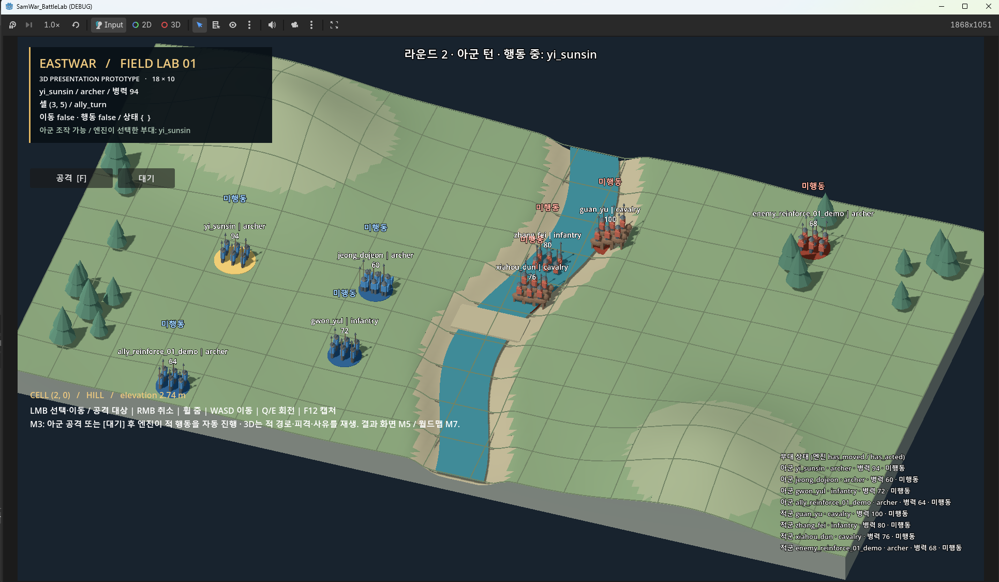

EASTWAR Dev Log #047
[3D Transition Series] Playing a Full Round on the 3D Battlefield
October 21, 2026 · Work log for October 20On the evening of October 20, I opened the newly delivered project folder in Godot and ran it myself. I moved friendly units and attacked the enemy. When the friendly turns ended, enemy units moved and attacked in sequence. I was able to play through a full round with the default deployment.
In entry 46, I introduced concept images of the soldiers who will enter the battlefield. The battle-screen work I was doing alongside them has now reached this point, too. The soldiers on screen are still placeholders, and I have not yet completed an entire battle from beginning to end. Still, I have moved from testing movement and attacks separately to playing friendly and enemy turns in sequence.

Connecting the existing battle to a new view
This time I focused on showing the results in 3D while keeping the battle rules I had already built. The battle engine calculates how far a unit can move, how many troops an attack removes, and whose turn comes next. Those calculations must not change just because the view becomes three-dimensional.
First, I connected friendly attacks to the 3D view and checked them. Enemy turns came next. The screen needed to show where an enemy moved, whom it attacked, and why it waited instead of moving. So I added a feature to the engine to record enemy actions. It now leaves nine types of records, covering movement paths, attack results, reasons for waiting, round starts, battle endings, and more.
The 3D view receives those records and shows enemy movement, hits, and damage numbers. I also blocked clicks during enemy actions so that no other commands could slip in. The same applies after the battle ends.
I treated adding records to the engine and displaying those records on screen as separate tasks. The first changed engine code but preserved the existing battle rules and results. Connecting friendly attacks, enemy action playback, and the Wait button to 3D did not change the engine code. Keeping track of which task touched what makes it easier to find the cause when something goes wrong.
One Wait button was missing
During the work, a round got stuck. A friendly unit had moved but had no enemy it could attack. The screen offered no way to end its turn without attacking.
The engine already had a wait action. But I had left the Wait button connection out of the instructions for displaying enemy actions in 3D. The session handling implementation spotted and reported the problem first, and the button was added as a separate fix. Now a unit that cannot attack can choose Wait and end its turn.
Checking that individual features work was different from actually playing a round. Even if movement and attacks both worked, the battle stopped when one necessary action between them was missing. Connecting the Wait button resolved that problem this time.
Separating implementation from review
I also divided up how I work with AI starting with this task. A separate Claude Code session handled the actual implementation, while Claude Coach wrote the work instructions and reviewed the results. I set out what to build separately from the criteria for checking it. I also incorporated this division into a new version of the overall design plan.
During review, we reran the automated checks and compared twenty-four randomly generated situations. We checked whether issuing the same command through the 3D view and directly to the battle engine produced the same result. We also deliberately broke features to test whether the checks really caught the errors.
The number of validation scripts rose from 32 to 35, and Godot tests from 64 to 76. None of the checks run this time failed. The reviewed work went onto the integration branch, and that evening I received the new folder and ran it myself. A round with the default deployment played through without a problem.
Leaving units walking across the river for now
When I tried it myself, units crossed straight over the river instead of using the bridge. In the initial practice scene they could cross only by the bridge, but the actual battle engine did not yet have river-crossing rules.
I decided to leave this alone for now. Preventing units from crossing the river or making them go around to the bridge would also change the existing 2D battle and the enemy's movement decisions. The checks would need to be revised accordingly. Since I am currently connecting the existing battle to a 3D view, I decided not to mix terrain-rule changes into the same work.
I also confirmed that an enemy gunner could move and then attack. That does not match the unit-type rules, but it was existing engine behavior, so I kept it this time. I have not yet decided whether to change it. I am keeping a separate record of issues like these that surface while moving the view over.
Defense comes next
I now need to connect defense, tactics, commanders' unique abilities, and reinforcements to the 3D view. A preliminary look at the code showed that tactics, abilities, and reinforcements first needed action records in the engine. As with enemy movement and attacks, there must be records that tell the view what to show.
I also need to choose a test scenario for playing an entire battle through. The round number at the top of the screen still updates late, and clicks can still pass through the information panel. I am refining the soldiers' 2D drafts and plan to make their 3D models with Tripo AI.
I intend to decide whether to make the whole battlefield 3D or place only 3D units on the existing 2D battlefield after this connection work is done. Once I can actually control it, I should be able to compare which looks better and is easier to play.
On October 20, I connected a full round, from friendly movement, attacks, and waiting to enemy actions. Defense is next. I plan to keep connecting and checking one thing at a time until I can play a whole battle from beginning to end.